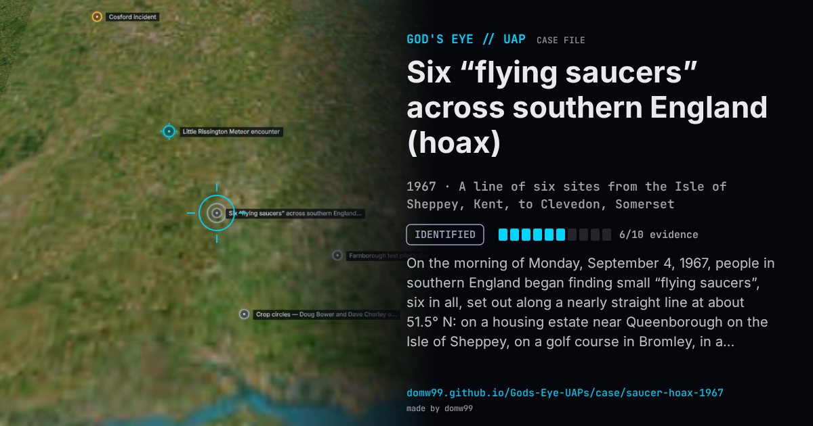

Six “flying saucers” across southern England (hoax)

On the morning of Monday, September 4, 1967, people in southern England began finding small “flying saucers”, six in all, set out along a nearly straight line at about 51.5° N: on a housing estate near Queenborough on the Isle of Sheppey, on a golf course in Bromley, in a paddock at Winkfield near Ascot, at Welford near Newbury, at Chippenham, and on Dial Hill at Clevedon. Each was about 1.4 m long, weighed about 45 kg and gave out an eerie electronic sound. Police cordoned them off; army bomb-disposal teams, RAF helicopters and the Ministry of Defence’s intelligence staff were called in; the army blew up the Chippenham saucer, one was lifted from Sheppey by helicopter, and one was sent to the Atomic Weapons Research Establishment at Aldermaston. When one was drilled into, a foul-smelling paste burst out over the police. By the evening the makers, apprentices from the Royal Aircraft Establishment at Farnborough, had owned up: it was a stunt for their Rag Week. The MoD’s file on the day was released by The National Archives.
Explanation
A Rag Week hoax by aircraft engineering apprentices at the Royal Aircraft Establishment, Farnborough, led by Christopher Southall and Roger Palmer: fibreglass shells with an oscillator and loudspeaker inside, filled with fermenting flour paste. They owned up the same day and raised money for charity.
What was seen
Shape: Smooth, metallic-looking saucers about 1.4 m long, emitting a bleeping noise
Witnesses: Members of the public who found them; four police forces, army bomb-disposal teams, the RAF and the MoD
Duration: One day
Sources
Browse
- United Kingdom
- 1960s
- Identified
- Landing and trace cases
- Official government documents
- Military witnesses
- Physical traces
- Police witnesses
- Discs and saucers